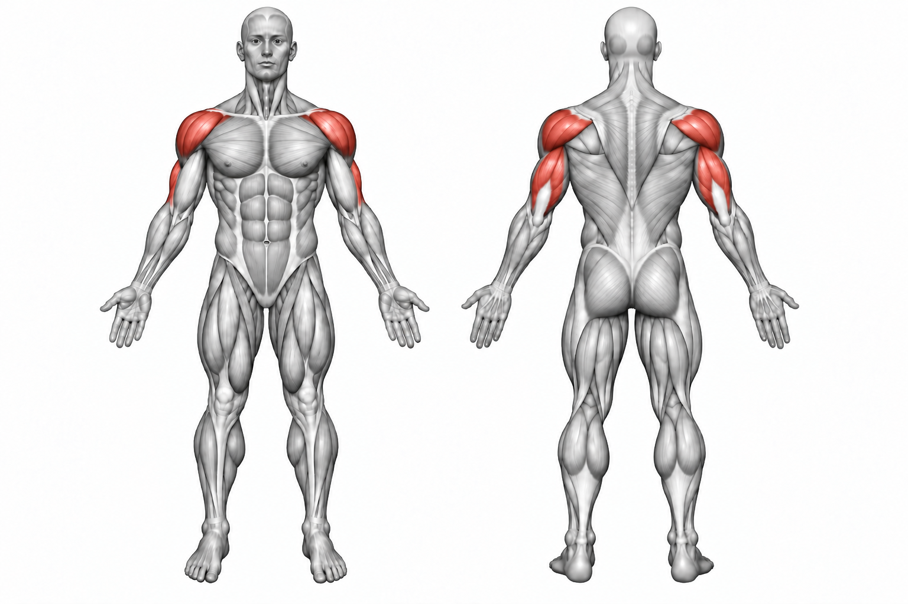

Barbell Shoulder Press


How to Perform
Stand with your feet about shoulder-width apart and hold the barbell at about shoulder height. Keep your core braced and your elbows positioned slightly in front of the bar.
Press the barbell overhead until your arms are extended without excessively leaning backward. Lower the bar under control back to shoulder height.
Primary Muscles
Anterior deltoid (Front Delt) and medial deltoid (Side Delt)
Secondary Muscles
Triceps brachii (Triceps), upper trapezius (Upper Traps), and pectoralis major (Upper Chest)